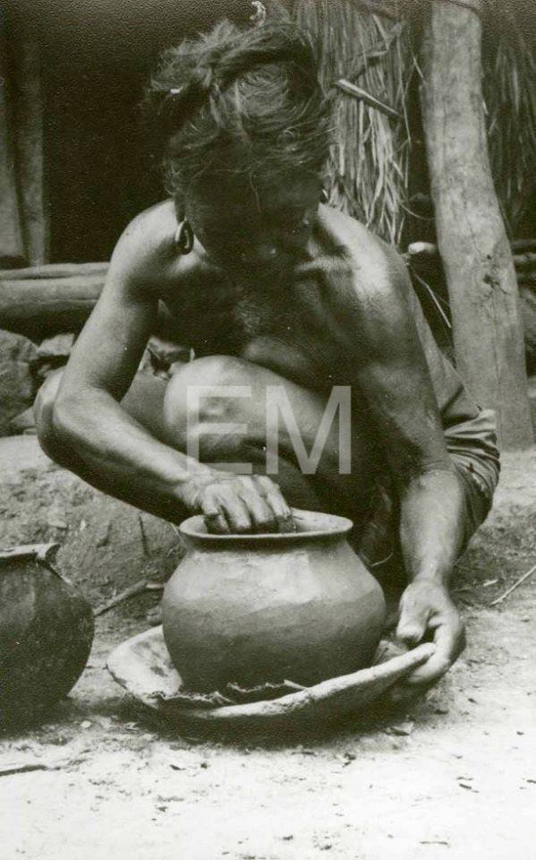
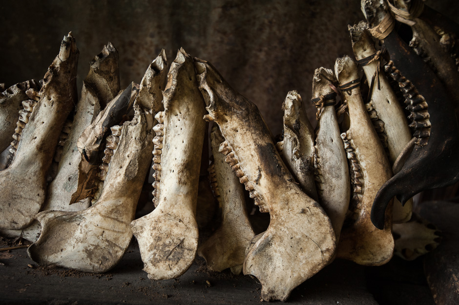
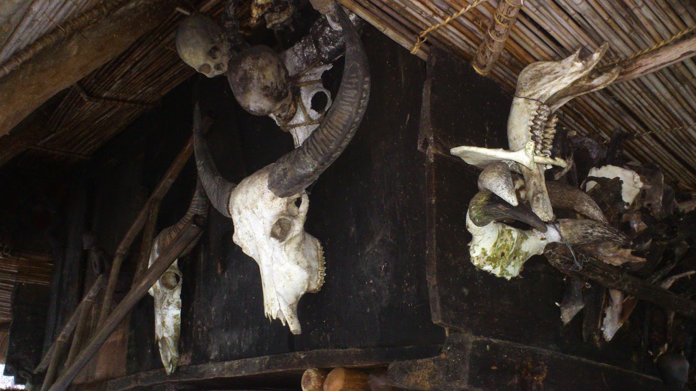
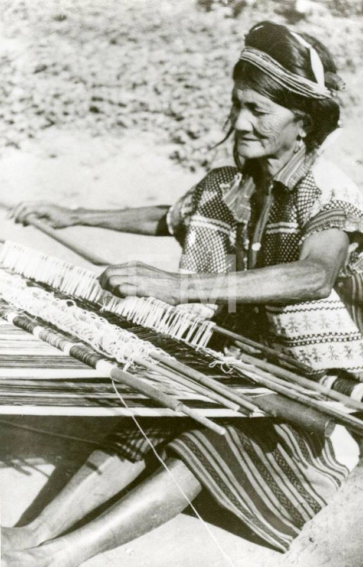
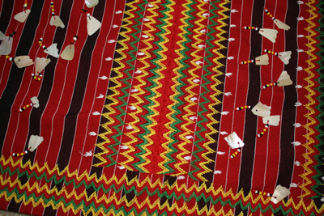
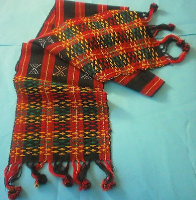
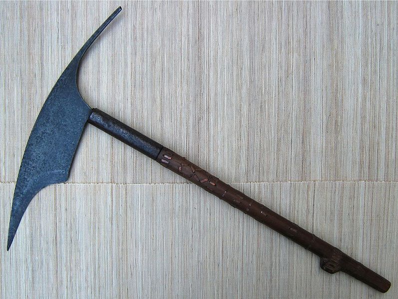

What is interesting in Balbalan, Kalinga?
Balbalan, Kalinga is also infused with different artworks, handicrafts, masterpieces and tools. In this section, we will be seeing some of them.
Balbalan, Kalinga is also infused with different artworks, handicrafts, masterpieces and tools. In this section, we will be seeing some of them.
|  |
|---|
| Image from Eduardo Masferré: People of the Philippine Cordillera |
Pottery is a traditional craft of the local tribes in Kalinga. Clay is the most important and earth’s most abundant raw materials (Kalinga State University, 2016).
Pottery is a timeless occupation and the best pots through the ages have an equality of timelessness about then that transcends chronological and cultural boundaries. The essence of design and form, the quality of surface, the hidden meanings and the integration with mankind’s’ daily existence over several thousand years, all add to the significance of the art.
In the contemporary art arena, pottery has been looked at as the poor cousin to paintingand sculpture in much the same way that the graphical arts were viewed. Pottery neitherpainting nor sculpture although has elements of both. Pottery has concerns that are quitedifferent from most other media of expression.
|  |
|---|
| Image by Jacob Maentz |
Kalinga and the Apayao, maintain hunting and fishing as an appreciable supplement to their regular food gathering and growing activities. The forest still an abundant source of wild meat for many families. Wild pigs, deer and birds are still commonly caught by hunters. Hunters are hanging the bones of the animals they capture into their houses as a trophy.
|  |
|---|
| Image by Travel Diaries:Banaue |
|  |
|---|
| Image from Eduardo Masferré: People of the Philippine Cordillera |
Kalinga weaves are characterized by the traditional color combinations of red and black stripes and the use of beads. Many traditional Kalinga weaving designs and patterns remain unchanged through generations, with weavers taking care not to make alterations since the colors and details have specific meanings.
|  |
|---|
| The Kalinga "Tapis" or "Kain" is the TraditionalClothing for female Image From Jenny Bawer Young | Alliance for California Traditional Arts |
|  |
|---|
| The Kalinga G-String or "Fa-al" is the Traditional Clothing for Men | Image From WorthPoint.com |
The pattern was determined and the treads arranged on a backstrap loom. Some clothing was acquired through trade, but locally woven items were highly esteemed for quality, design and durability. Kalinga and Gaddang people decorated their clothes with beads and shells. Beads and shell jewelry and accessories ornament the wealthy throughout the mountain provinces.
|  |
|---|
| Image from Wikimedia Commons |
The Kalinga tribe is recognized as the most feared and most prolific of all Filipino Head Hunters, on Luzon Island, in the Philippines. Their strong sense of tribal membership and loyalty results in frequent tribal unrest and occasional outright war. Due to the mountainous terrain and warrior culture, the Kalinga were able to preserve their culture despite centuries of occupation in the lowlands by the Spaniards, Americans, and the Japanese.
{kind=link}